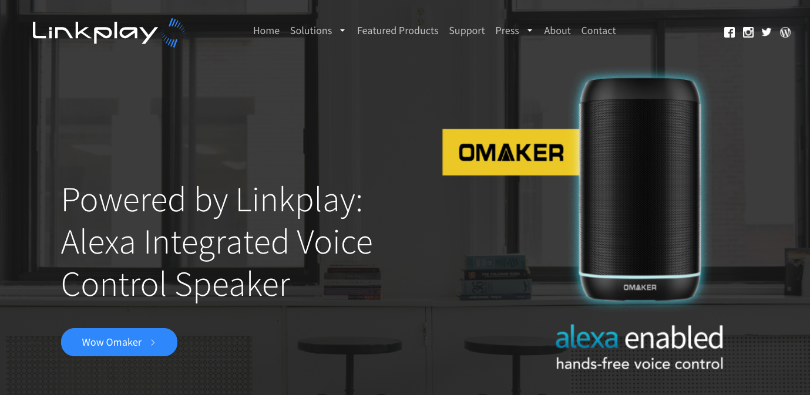
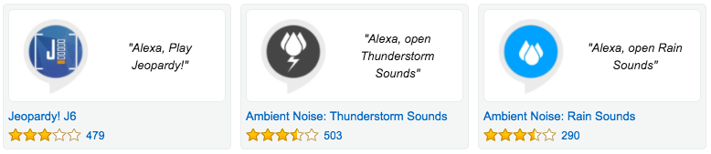
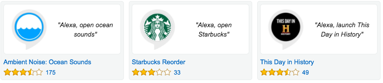

Alexa: an Introduction

David W. Shao
语音识别的云化
Google Speech API

- 先进的机器学习技术
- 支持超过80种语言
- 适应嘈杂的环境
- 各种设备的应用程序API接口
IBM Watson

- 支持语音到文本、文字转语音
- 运行在 IBM Bluemix 平台上
- Watson APIs 文档及易用性比Google 好
Microsoft Azure
Amazon Alexa


6 million devices in 2016, 24 million predicted in 2017
New in 2017
Alexa services became available in UK, and Germany on February 7, 2017
Alexa
- A clear winner in CES 2017: major IoT players showcased integrations with Alexa
- Alexa Voice Services (AVS)
- Alexa Custom Skills
- Integrated with Amazon's Lambda services
- Alexa is the open consumer AI platform


Alexa in the car allows user to
- control smart home features,
- play music
- set notifications
- even order replacement parts for the car.
Echo/Alexa in the home allows users to
- check fuel levels
- order replacement parts
- send driving directions to the car
LG IntraView Refrigerator

LG IntraView Refrigerator
- Voice Control(Alexa)
- WebOS Smart Platform
- Remote Viewing
LG Hub Robot

LG Hub Robot
A re-skinned Alexa, and a hub for other smart appliancesGE Lamp

GE Lamp
- Voice Control(Alexa)
- circular LED tube
- Command to dim the lights, or
- ask it to set the light to wake you up
Samsung POWERbot™ VR7000 Robot

Samsung POWERbot™ VR7000 Robot
- less than 4in tall(97mm)
- slim design, powerful cleaning
- FullView Sensor 2.0
- Intelligent power control
- Can be controlled by voice command through Amazon Echo
Lenovo Smart Assistant

Lenovo Smart Assistant
Powered by Amazon Alexa


announced on January 16, 2017
Will elevate the ecosystem to a new level
Why Is AWS Successful
Rich functionality and rapid pace of innovation

Why Is AWS Successful
Partners and customer ecosystem
Ecosystem is Key
AWS has been very successful in developing a healthy ecosystemHow to Integrate
with
Amazon Alexa?
Amazon Alexa Voice Services (AVS)

Alexa Voice Services (AVS)
- Cloud-Based Intelligence
- Easy-to-Use APIs
- Custom hardware, adding voice control to your devices
Linkplay - wifi-audio modules
Alexa Skill Kit
- Skills = Capabilities
- a collection of self-service APIs, tools, documentation and code samples
- e.g Smart Home Skill Set

Custom Skills
 


Thank You
https://weidongshao.github.io/